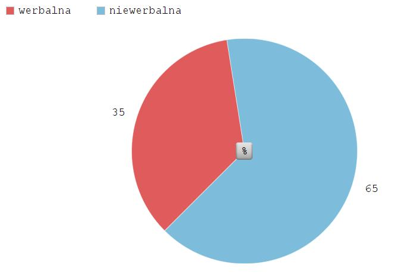

Autorzy:
Paweł Maciocha
Katarzyna Woźnica
1. Komunikacja werbalna
2. Komunikacja werbalna w pracy
3. Rozmowa o pracę
4. Negocjowanie wynagrodzenia
5. Spotkania w pracy
6. Pisanie maili służbowych
7. Źródła
werbalna
niewerbalna
35 %
65 %

Rozmowa o pracę
Negocjowanie wynagrodzenia
Spotkania w pracy
Pisanie maili służbowych
[2] Źródło: https://pl.wikipedia.org/wiki/Komunikacja_werbalna
[3] Źródło: http://etyka-biznesu.wyklady.org/wyklad/431_komunikacja-interpersonalna-w-srodowisku-pracy.html
[4] Źródło: http://www.egospodarka.pl/68187,Komunikacja-interpersonalna-w-pracy,1,20,2.html
[7] Źródło: https://gratka.pl/regiopraca/portal/rynek-pracy/zarobki/negocjowanie-wynagrodzenia-problem-dla-85-polakow
[8] Źródło: https://gratka.pl/regiopraca/portal/twoje-cv/negocjacje-placy/jak-rozmawiac-z-szefem-o-podwyzce